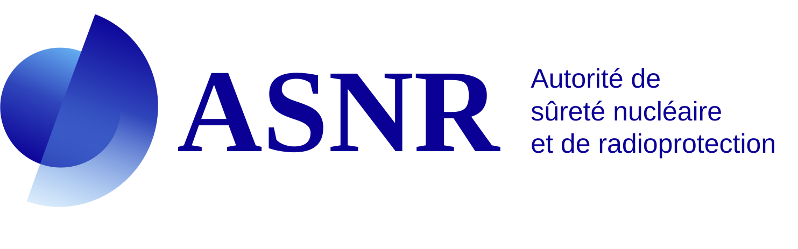
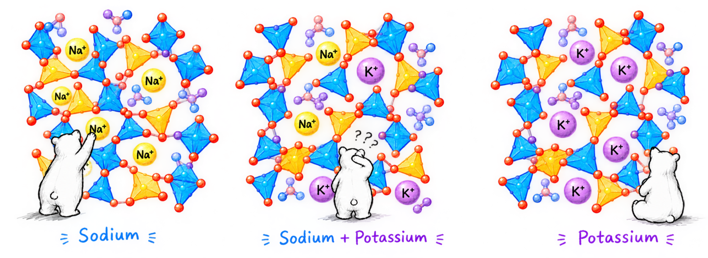
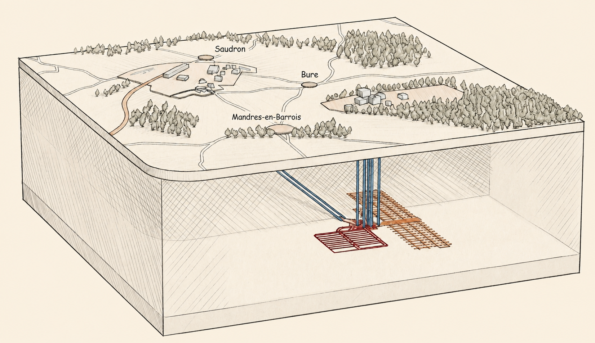
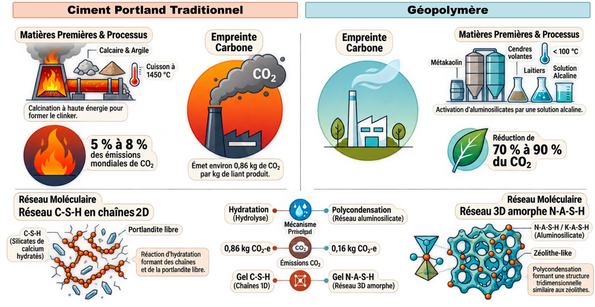
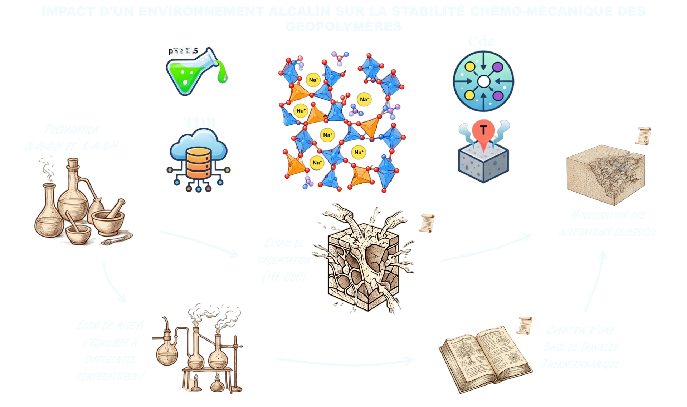
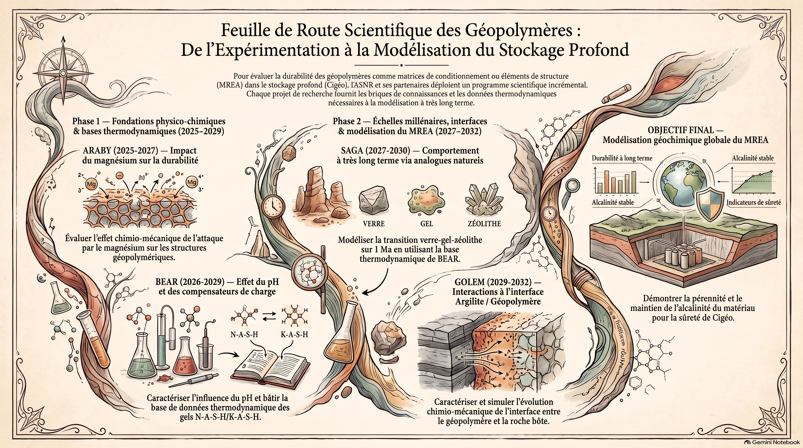
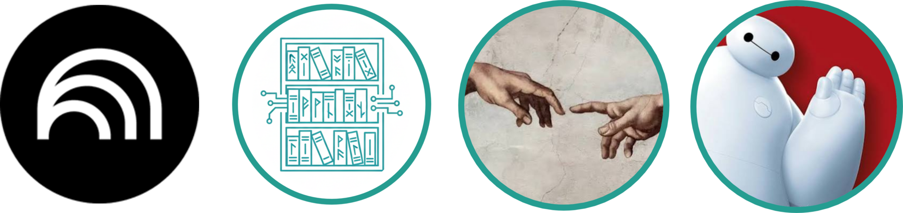
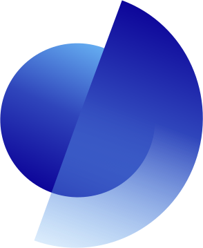

Mejdi NEJI, Georges MATTA
ASNR/PSE-ENV/SPDR


Coulis géopolymère pour l'espace annulaire de l'alvéole HA : neutralise l'acidité et limite la corrosion du chemisage acier.
Précurseur : argilite calciné + metakaolin avec additifs (acide borique et tétraborates de lithium ou de sodium)
Activateur : Solutions potassique ou sodique
Cahier des charges atteignable (DPU > 24h, pH 10-11) avec un mélange xmétakaolin + argilite calcinée (≥ 650 °C).
Maintenir une alcalinité suffisante pour garantir la protection du chemisage acier.
Développement d'un liant géopolymère innovant, résistant au feu, destinés aux colis et aux alvéoles de déchets de moyenne activité à vie longue (MA-VL), assurant la sécurité et la durabilité du confinement.
Résistance en compression avant/après traitement thermique à 1 000 °C.
Précurseur : argilite + kaolin (pur ou métakaolin impur K5), taux d'argilite 0/33/67 %, calcination à 600 ou 750 °C
Activateur : Solutions potassique.
La résistance au feu dépend de la teneur en argilite et du kaolin. Argilite + métakaolin K5 : tenue à 1 000 °C, gain de compression jusqu'à 73 %.
Protéger le confinement et maintenir une durabilité des structures lors d'un incendie.
Matrices à base degéopolymères pour conditionner des déchets magnésiens (gaines de combustible MgZr).
Précurseur : Metakaolin
Activateur : Solutions sodique avec 1.25mol/L de NaF.
Autres : Sable
pH > 12 → passivation en brucite Mg(OH)₂. Le NaF limite la corrosion (MgF₂/NaMgF₃), la forte concentration étant plus efficace.bonne tenue aux rayonnements et rétention des radionucléides.
Limiter la production d'H2 lié à la corrosion des gaines MgZr.
Composites à matrice minérale pour le chemisage des alvéoles HA : mécanique et inertie chimique.
Précurseur : Metakaolin
Activateur : Solutions potassique.
Renfort : fibres courtes de wollastonite ou fibre longe de verre alcali résistant
Tenue des renforts en milieu alcalin et mode opératoire de synthèse des composites maîtrisé.
Eliminer le risque de corrosion du liner tout en conservant une intégrité mécanique sur le long terme.




Appui à l’expertise et à la sûreté - Projet BEAR